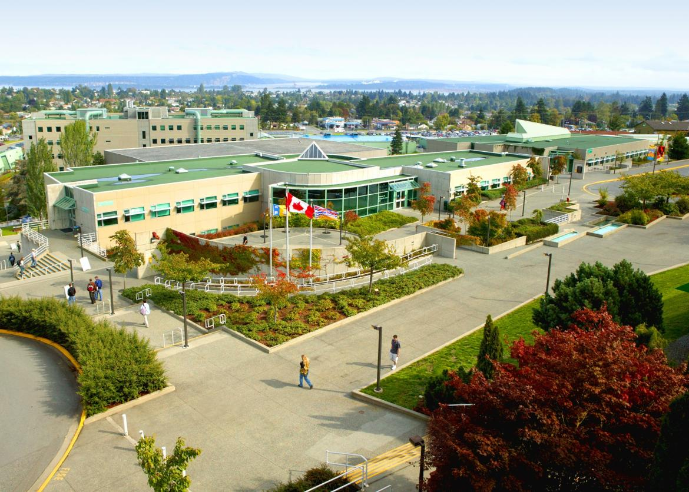
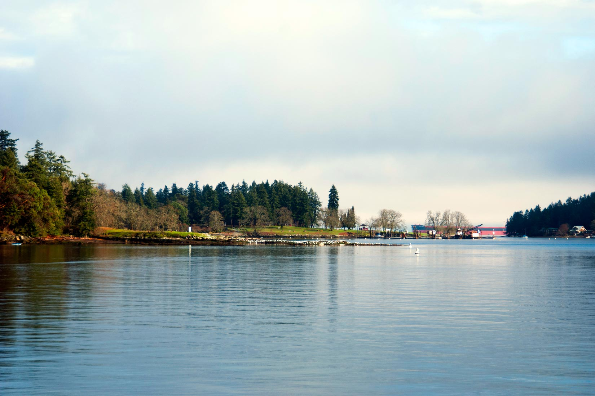
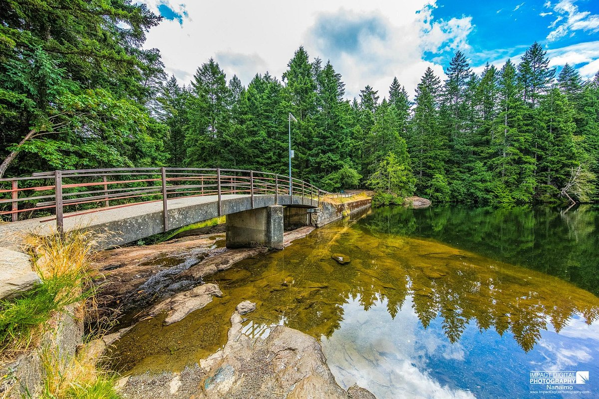
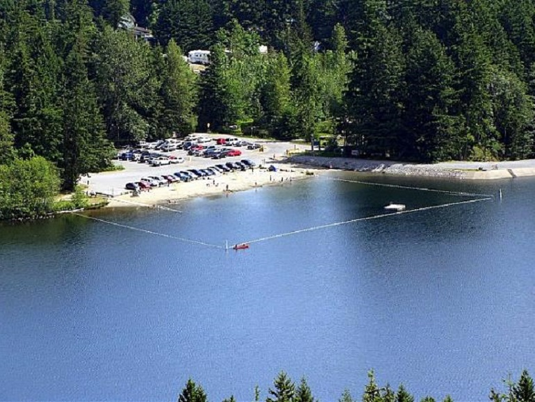

Details about Places
Vancouver Island University

Vancouver Island University, often referred to as VIU, is a place close to my heart. The serene
campus nestled amidst nature's beauty is not just an educational institution but a hub of learning
and cultural diversity. Whether it's the welcoming atmosphere, the friendly faces, or the wide
range of academic opportunities, VIU is a place where growth and discovery thrive.
Royal Bank of Canada

The Royal Bank of Canada, or RBC, represents more than just a financial institution to me. It stands
as a symbol of trust and reliability. The bank's presence in Nanaimo offers convenient access to
banking services and financial guidance. It's a place where financial aspirations find support and
a community where your financial well-being is a priority.
Newcastle Island

Newcastle Island holds a special place in my heart as it's a natural oasis in the midst of urban
life. The island's trails, forests, and waterfront views provide a serene escape from the hustle and
bustle of the city. Whether you're hiking, picnicking, or simply enjoying the beauty of nature,
Newcastle Island offers a tranquil retreat.
Colliery Dam Park

Colliery Dam Park is a hidden gem in Nanaimo, where the tranquil waters of the Colliery Dams meet
lush greenery. It's a place to connect with nature, go for a peaceful walk, or even enjoy a
leisurely paddle. This park offers a slice of wilderness within the city, making it a favorite spot
for relaxation and outdoor enthusiasts.
Westwood Lake Park

Westwood Lake Park is a haven for outdoor enthusiasts and adventure seekers. With its clear waters,
sandy beach, and picturesque hiking trails, it's an ideal destination for swimming, kayaking, and
hiking. The park's scenic beauty and recreational opportunities make it a beloved spot for both
locals and visitors alike.